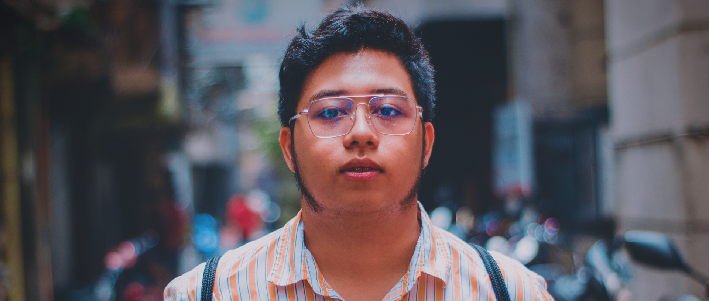

Hi, this is Joshua Allada
As I venture into my journey to become a future Frontend Developer, I am fueled by an insatiable passion for technology and a deep-seated desire to create engaging digital experiences. I immerse myself in the intricacies of HTML, CSS, and JavaScript, eager to unravel their complexities and harness their power to craft intuitive and visually appealing user interfaces. With every line of code I write, I am determined to master the latest frameworks and libraries, embracing the challenges they present as opportunities for growth. I am committed to refining my design sensibilities, understanding the nuances that transform good designs into extraordinary user experiences. I acknowledge the significance of responsive design and cross-browser compatibility, embracing each hurdle as a chance to fortify my problem-solving skills. Guided by a relentless pursuit of knowledge and a hunger for innovation, I am dedicated to shaping the future of frontend development, one line of code at a time.
Photography and videography are my ultimate passions, serving as my creative outlets and allowing me to capture the world's fleeting moments in all their splendor. With a camera in hand, I am transported into a realm where every frame tells a unique story, each image preserving emotions, memories, and the essence of the present moment. Whether I'm framing a breathtaking landscape bathed in the golden hues of sunset or capturing candid expressions that encapsulate raw human emotions, I am continually inspired by the limitless storytelling potential of visual media. I am drawn to the interplay of light and shadow, the dance of colors, and the intricate details that often escape the casual observer, making it my mission to unveil the beauty hidden in the ordinary. In the world of videography, I am enthralled by the power of moving images to evoke profound emotions, to convey narratives that resonate deeply, and to transport audiences to new realms of imagination. With every click of the shutter and every frame I capture, I am dedicated to preserving the essence of life and the magic of moments, nurturing my passion for photography and videography with unwavering dedication and a perpetual thirst for creative expression.
Contact Me!
Go back to top.